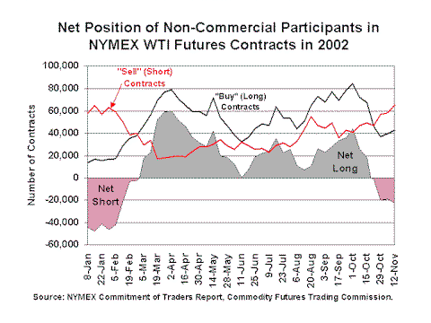

|
Released on November 20, 2002
(Next Release on November 27, 2002)
Forward Fundamentals
When the price of West Texas Intermediate (WTI) crude oil rose from around $20 per barrel (the price it was for most of the October 2001 through February 2002 period) to $25 per barrel and higher beginning in March 2002, U.S. commercial crude oil inventories were still relatively high for that time of year. With high inventories normally associated with lower prices, many looked to other reasons, including the risk of war in Iraq, to explain the higher prices. Lately, with U.S. crude oil inventories below the lower limit of the average range for this time of year, the WTI price has fallen from about $30 per barrel (the price it was from the second half of August through the first half of October) to closer to $25 per barrel over the last couple of weeks. Again, the inconsistency between inventories and prices, this time in the opposite direction, has led some analysts to talk about a “peace discount.” However, we submit that another explanation resolves these apparent inconsistencies: forward fundamentals.
Simply put, the concept argues that prices today are reflecting perceptions of the supply/demand balance sometime in the not-too-distant future. For example, although crude oil inventories remained relatively high through the spring and early summer, the market correctly anticipated that reduced OPEC production relative to 2001 levels would ultimately drive inventories lower and prices would rise. As a result, market participants were faced with the prospect of buying futures contracts in the spring and early summer at lower prices or waiting until prices were higher a few months later. Many non-commercial market participants (namely speculators) during the spring and summer anticipated increasing oil prices, thus they went “long” by buying contracts with the intention of balancing out their positions at a later time by selling contracts at a supposedly higher price (see a graph of the weekly net position of the near-month WTI futures contracts in 2002). Just the opposite has occurred recently. With reports that OPEC production in both September and October climbed to the highest levels seen this year, essentially matching or exceeding year-ago levels, many market participants anticipated increased supplies of crude oil entering the U.S. market in late November and December, and consequently “bet” that oil prices would fall in the future. As a result, speculators sharply increased their net short positions by selling contracts then with the intention of balancing out their position later by buying contracts at a lower price in the future. This helps explain how the WTI price could be falling while U.S. crude oil inventories are near the lowest level in years.

These movements in the net long (when speculators are buying more contracts than they are selling) and net short (when speculators are selling more contracts than they are buying) positions in the market appear, at least in 2002, to reflect perceptions of the supply and demand balance at some point in the future. Of course, market participants still take into account other factors in assessing the supply and demand fundamentals, including the likelihood of war in Iraq, when deciding what price they should pay for WTI crude oil. But despite the apparent contradictions seen in 2002, we would argue that the supply/demand balance is the most important determinant of prices in the U.S. crude oil market. Interpreting that balance and quantifying its impact on prices, however, requires not merely recognition of the current balance, but perhaps, more importantly, an accounting of market expectations for that balance several months forward.
Retail Gasoline and Diesel Fuel Prices Fall
The U.S. average retail price for regular gasoline fell last week for the second week in a row, decreasing by 3.0 cents per gallon as of November 18 to end at 140.9 cents per gallon. This price is 24.2 cents per gallon higher than last year.
Retail diesel fuel prices fell last week for the fourth week in a row, decreasing by 2.2 cents per gallon to a national average of 140.5 cents per gallon as of November 18. Distillate fuel inventories have dropped below the normal range this winter and are expected to remain low through 2003, so it is unlikely that prices will decrease significantly in the coming months. Retail diesel prices were down throughout the country, with the largest price decrease occurring in the Rocky Mountain region, which saw the price fall by 3.5 cents per gallon to end at 146.1 cents per gallon.
Residential Heating Oil Prices Continue Modest Decline
Residential heating oil prices decreased slightly for the period ending November 18, 2002. The average residential heating oil price was 127.3 cents per gallon, down 0.2 cent per gallon from the previous week. Residential propane prices on the other hand continued to move slightly upward, increasing by 0.4 cent per gallon from 115.8 to 116.2 cents per gallon. Residential heating oil prices are 7.2 cents per gallon higher than last year at this time while residential propane prices are 2.8 cents per gallon higher than one year ago. Wholesale heating oil prices increased 0.2 cent per gallon, to 77.6 cents per gallon, while wholesale propane prices decreased from 53.7 to 52.8 cents a gallon, down 0.9 cent per gallon.
Modest Propane Stock Draw
The near record draw on U.S. inventories of propane since the beginning of the 2002 heating season finally slowed last week with a weekly stock draw that measured a relatively modest 0.9 million barrels. Since October 1, 2002, U.S. inventories of propane have fallen by more than 10.0 million barrels, marking one of the largest stock draws ever for this period. U.S. inventories of propane as of the week ending November 15, 2002, stood at an estimated 61.1 million barrels, about 9.5 million barrels below the same year-ago level. Comparatively, during the same October through mid-November period last year, U.S. inventories actually increased by nearly 3.6 million barrels, although last year, the weather was considerably milder during this period which allowed inventories to build unseasonably at that time. However, despite the sharp draw this year, U.S. inventories of propane continue to track at the upper limit of the average range. Regional stock draws reported a shift from what had been the trend over the past several weeks with most of the weekly draw originating in the Gulf Coast region instead of the Midwest region. While propane inventories in the Midwest were relatively unchanged last week, the Gulf Coast during this same period reported a stock draw that was greater than 0.7 million barrels. East Coast inventories continued their recent trend with a weekly draw that was less than 0.1 million barrels.
Note: Text from the previous editions of “This Week In Petroleum” is now accessible through a link at the top right-hand corner of this page.
|